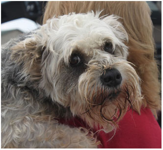
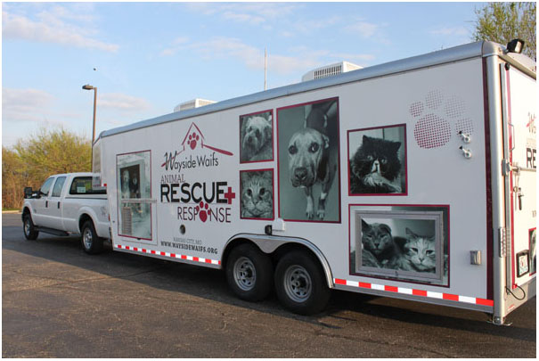

Each year Wayside Waifs rescues more than 6,500 abandoned, abused and homeless animals. Not only in the Kansas City metro area, but across the states of Missouri, Kansas and Oklahoma. Our FEMA certified Team regularly partners with national animal welfare organizations in situations of natural disasters, animal hoarding and puppy mills.
In the Fall of 2011, Wayside Waifs' Animal Rescue and Response Team responded to a call from the Andrew County Sheriff's Department to help with an animal hoarding case in rural Savannah, Missouri. In the past two years these types of calls have increased. From the Humane Society of the United States to the ASPCA, Wayside Waifs has partnered with dozens of shelters, animal welfare and law enforcement agencies to save thousands of animals from dire situations.
Although the team has witnessed extreme circumstances, nothing prepared them for what they found in Savannah. They expected to rescue about 18 animals. Instead, they found nearly 30 large breed dogs living outside in deplorable conditions. Without food or water, the animals were malnourished, dehydrated and were restricted to only small wire pens and shacks. "Its not fit for a human to live in, let alone a dog," said Sarah Little, Director Animal Welfare. Because of limited resources, Wayside's Rescue Team had to leave some of the animals behind. Eyes filled with tears and crouching nose to nose, Team members promised, "I will be back for you." And Wayside's Rescue Team kept their word, rescuing the remaining dogs and bringing them back to safety.
A short time later, a Rescue Team member shared this heartbreaking story with two very special donors, Harold and Marilyn Melcher. Upon learning of this Rescue Team effort, Harold's eyes filled with tears. Right then, the Melchers made a generous gift of funding a rescue transport trailer and truck.

The new, state-of-the-art 28-foot trailer now allows Wayside to transport up to 50 animals in a climate controlled space. The unit also features a large generator for natural disasters or crisis situations that require an extended stay. A special ventilation system was also designed specifically for transporting animals and decreasing the possibility of illness. And if immediate medical care is needed, the trailer is stocked with equipment that includes stretchers and cameras for monitoring the animals during their trip back to Wayside Waifs.
Once the dogs from Savannah arrived at the shelter, they experienced what it is like to have a blanket to lie on, toys to play with and daily food and water. Most of all, they received the kindness of a human being and lifesaving medical care. And life only got better from there. They took their first steps toward finding their forever homes. But the mission is far from over. There are still thousands of animals waiting, silently suffering. And Wayside Waifs' Animal Rescue and Response Team continues to answer the call and make sure no animal is left behind.
In addition to these types of rescues, Wayside Waifs regularly partners with the ASPCA to provide support and medical care for animals in times of natural disaster, hoarding cases and dogfighting ring seizures. Wayside Waifs appreciates the ASPCA for their support of our rescue and disaster relief efforts through their partner organization grant program.